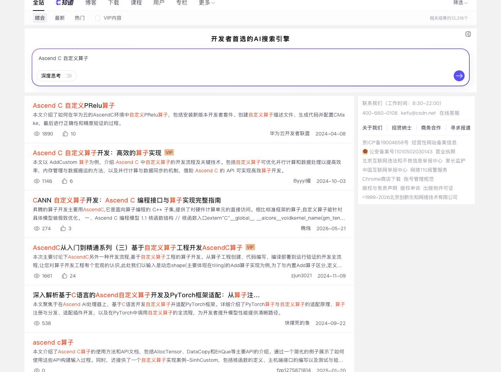
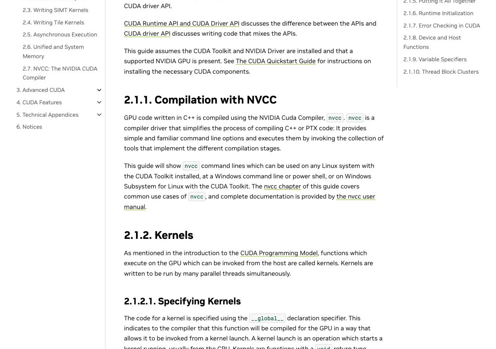
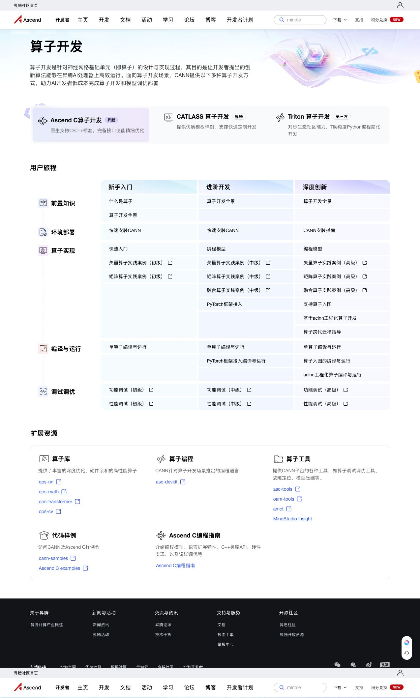
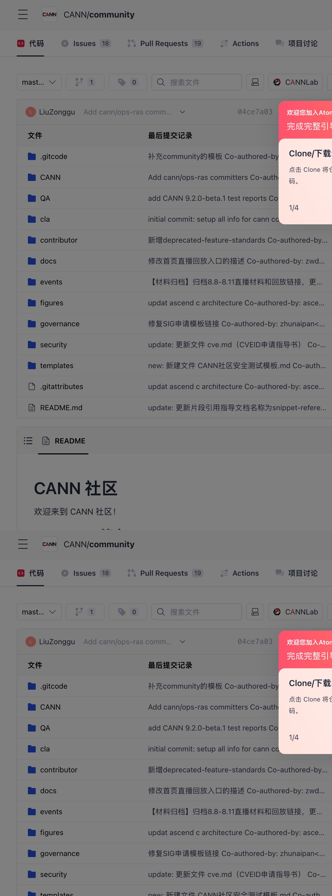
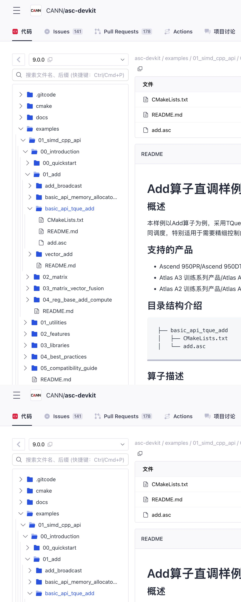

01 · DIRECT ANSWERS
先回答三个核心问题
基于公开 Issue、代码仓、官方场景、文档与站外搜索结果整理。
Q1 · 旅程发生了什么变化？
从“查找内容”转为“在多源与 AI 之间完成可验证的工作”。
入口由站点导航变为搜索、对话、代码仓、同伴经验的混合；开发者需要不断判断来源、版本、适用范围和责任归属。
Q2 · 未来社区的价值在哪里？
成为生态的可信协作层
把权威来源、维护状态、真实任务结果与求助/贡献链路连接起来，让 AI 的建议有依据、开发者的结果能被复用。
Q3 · 如何吸引并留住用户？
先交付“我的第一个真实结果”，再形成持续回访与可见影响。
用外部可发现的任务入口获客；用低风险首跑激活；用上下文支持、更新与团队复用留存；用低摩擦回流推动共创。
02 · JOURNEY SHIFT
开发者生命周期：传统旅程与开发者 × AI 旅程
两张图使用同一 S0–S4 生命周期；比较 AI 如何改变入口、选择、首跑、交付和共创的触点、风险与社区责任。
BEFORE · 传统开发者生命周期
用户主要在同一社区与产品空间完成学习、首跑、求助与复用
AI 尚未成为普遍入口；社区的核心职责是承载内容、组织人工支持、展示实践与汇集贡献。
S0 · DISCOVER发现与评估理解能力与适用场景
S1 · ORIENT定向与选择确定产品、路径与版本
S2 · ACTIVATE首个真实结果复用样例并完成首跑
S3 · DELIVER交付与扩展排障、优化与稳定推进
S4 · CO-CREATE共创与影响沉淀经验并服务他人
触点TOUCH
官网导航产品页活动
官方文档教程博客
样例仓README下载包
论坛工单专家
收藏夹团队 Wiki案例
行为ACTION
沿产品与社区目录判断：它能否解决我的问题？
搜索教程和文档，自行判断产品、版本与路线。
下载样例、照着 README 配置，确认能否跑通。
整理问题、补充描述，等待人工回复或处理。
采纳答案，将链接、笔记或案例留给团队。
情绪EMOTION
有方向
选择负担
首跑受阻
等待恢复
获得帮助
痛点PAIN
入口依赖站内导航
任务意图未被识别
内容以阅读为主
版本与适用条件分散
样例与真实项目有距离
首跑信号难判断
问题描述从零开始
支持结果与执行环境脱节
经验停留在链接或帖子
复用效果不可见
社区价值ROLE
建立清晰内容目录
提供新手入口
沉淀权威知识
展示最佳实践
提供完整样例与教程
降低首次配置门槛
组织专家答疑
承接工单流转
汇集案例与贡献
形成可搜索档案
NOW · 开发者 × AI 生命周期
用户从任务或报错进入，在 AI、多源资产与本地环境间完成可验证交付
AI 把发现、解释和生成压缩进一次对话；版本、来源、验证和责任判断成为贯穿 S0–S4 的前提。
S0 · DISCOVER发现与评估任务可否被 AI 正确理解
S1 · ORIENT定向与选择生成并核验推荐路径
S2 · ACTIVATE首个真实结果在本地约束下完成验证
S3 · DELIVER交付与扩展诊断、优化与持续恢复
S4 · CO-CREATE共创与影响回流结果、服务下一位用户
触点TOUCH
搜索AI 对话项目日志
官方文档GitCodeCSDN
终端容器NPU测试日志
AI 诊断ProfilingIssue工单
案例库PR团队知识库
行为ACTION
用自然语言描述目标或贴入报错，期待直接得到下一步。
让 AI 聚合多源内容，再判断来源、版本和适用范围。
复制或改写步骤，在真实硬件、版本与项目约束下验证。
让 AI 汇总日志与已尝试动作，再升级到案例、专家或 Issue。
记录适用条件与结果，将修复、案例或 PR 回流为可引用资产。
情绪EMOTION
期待加速
快速获得候选
验证压力上升
恢复不确定
形成影响
新增断点PAIN
入口不再只属于社区
意图与环境信息常不完整
答案跨文档、仓库和站外经验
AI 输出缺来源与版本边界
候选答案不等于可运行
验证信号和硬件条件难对齐
日志与上下文在切换中丢失
规模与性能条件难持续跟踪
结果状态难回流为资产
贡献影响对作者不可见
社区新职责ROLE
让任务页被 AI / 搜索准确发现
收集任务简报的必要条件
输出带来源、版本、范围的可信路径
把多源资产编排为步骤
提供命令、预期输出、验证状态
记录适用硬件和规模条件
升级时自动携带上下文
持续追踪失败分支与规模条件
将结果回流为可引用案例
反馈贡献被复用的影响
生命周期的关键变化：S0–S4 没有消失，但每一阶段都从“社区内容与人工支持”转为“AI 介入 + 多源资产 + 本地验证”。过去的主要摩擦是找内容、理解内容；现在的主要风险是候选路径能否在当前版本、硬件和项目条件下跑通，并在失败后持续恢复。

任务入口已经包含两次判断
先在 Ascend C / CATLASS / Triton 中选路径，再在新手、进阶、深度创新中找资源；用户在进入代码仓前已开始做选择。
页面证据 · 昇腾算子开发场景（标注 1–2）

可运行资产在代码仓中，但需带着条件抵达
截图可见 9.0.0 版本、`01_add` 样例目录与 CMake / README / `add.asc` 文件；这就是首跑所需资产的落点。
页面证据 · GitCode Add 样例（标注 1–2）
{kind=link}

站外经验扩大可发现面
单次搜索即出现多篇实践文章；可发现性很强，但版本、硬件与验证条件并不在结果页中统一呈现。
页面证据 · CSDN 搜索结果（标注 3）
03 · OBSERVED USER CASES
公开案例：开发者以项目目标和报错进入生态
记录任务、环境/版本、问题、支持动作与公开状态，形成可追溯的证据链。
任务进入形态用户携带项目目标、模型、硬件、CANN、框架、分支、日志和最小复现；支持单元接住这些上下文并持续追踪。
案例记录所有案例来自
2026-08-17 公开 GitHub Issue
与评论镜像；公开状态按“已报告修复、人工引导、未完全闭环、路径定向”记录。原始
API 快照保存在
evidence/cases/。
真实模型微调 · 已报告修复
Qwen3-ASR 在 910B 上微调，算子编译失败
真实任务用户用 torch_npu 2.1.0 +
CANN 8.0.0 在 Ascend 910B 微调 Qwen3-ASR。
→
上下文化报错提交
E90003、bfloat16 TransData 不支持，以及训练日志和运行环境。
→
公开结果提问者评论称切换至 910B2 并升级 CANN、torch_npu 后解决。
真实洞察：支持入口应以“模型任务 + 软硬件组合 +
报错”承接，统一模型任务、软硬件组合与错误上下文。
来源：Ascend/pytorch #148（lrs02，2026-06-25）
真实源码构建 · 人工引导
指定分支、Python 3.11 下源码编译缺少配置文件
真实任务用户在
pytorch-7.3.0-pytorch2.6.0 分支执行
→
ci/build.sh --python=3.11。
上下文化报错明确给出缺失
→
op_plugin_functions.yaml 与
derivatives.yaml 的路径。
支持动作回复要求检查前序报错、使用干净/推荐编译环境，并回链官方源码安装指南。
真实洞察：社区把“当前分支、命令、错误路径”映射回环境约束与文档段落。
来源：Ascend/pytorch #106（NiYueLiuFeng，2026-01-29）
真实大模型训练 · 未完全闭环
多 NPU GPT 的 torch.compile 超时：有方案，但 1.5B 仍未解决
真实任务用户在
Ascend950PR、CANN 9.0.0、torch 2.10.0、torch_npu 源码编译和
triton-ascend 3.2.1 下运行最小 GPT 多 NPU 测试。
→
跨社区求解Issue
明确同步到
GitCode；用户获得方案与链接，同时保留最小复现和完整环境。
→
真实状态用户反馈小规模方案可用，但 1.5B 仍超时，原因未定位。
真实洞察：答案需要配合状态追踪、规模条件、未解分支和跨站延续，当前案例仍处于未闭环状态。
来源：Ascend/pytorch #154（ShaohonChen，2026-07-28）
真实大模型部署 · 路径定向
MindIE 用户询问 PD 分离部署是否支持、是否有参考方案
真实任务用户直接询问 PD
分离部署能否落地。
→
缺的内容需求集中在具体部署路径与参考方案。
→
支持动作回复确认已有支持，指出需配置 K8s，并直链 PD 分离服务部署文档。
真实洞察：面向大模型应用的社区入口从“部署目标”开始，路由到对应架构、环境与文档。
来源：Ascend/MindIE-LLM #1（flyingbytes163，2026-04-10）
04 · CASE CORPUS
15 个公开案例：任务集中在交付、兼容与正确性
新增 10 个 Issue 快照，连同原有 5 个案例编码为任务类型、上下文字段与公开状态。
15公开 Issue 样本
5 个仓库 / 镜像入口
5 个仓库 / 镜像入口
5模型训练、推理与部署
应用交付类任务
应用交付类任务
5源码构建、版本匹配、上游兼容
构建与兼容类任务
构建与兼容类任务
5精度、崩溃、Profiler 与转换
正确性与性能类任务
正确性与性能类任务
任务类型 × 公开状态
应用交付 · 5
148154M1147144
构建与兼容 · 5
106163149T4T1/2
正确性与性能 · 5
MS402133153125精度
绿＝用户报告恢复 /
已关闭；橙＝给出路径或公开方案；红＝开放或未完全闭环。编号对应
evidence/case-corpus-20260818.json。
06 · LLM APPLICATION EVIDENCE SLICE
大模型应用案例切片：验证开发者 × AI 生命周期的 S0–S4 断点
依据 MindIE PD 分离、Qwen 微调、多 NPU GPT、Qwen 推理和 ATC 精度案例归纳；这不是第三条旅程，而是上方 AI 生命周期在大模型应用中的真实任务证据。
定义目标
选择部署、微调、推理、训练或迁移目标。
- 触点：搜索 / AI / 产品页
- 案例：MindIE #1
选型与配套
确定模型、芯片、CANN、框架、容器与分布式方案。
- 触点：版本文档 / GitCode
- 案例：torchair #4、pytorch #144
首个可运行结果
运行最小模型、样例或单卡 / 小规模任务。
- 触点：样例 / README / AI
- 案例：Qwen3-ASR #148
排障与扩展
处理算子、编译、精度、超时与性能问题。
- 触点：日志 / Issue / CSDN
- 案例：#154、#125、#153
交付与回流
确认规模条件、沉淀方案、更新资产并服务团队复用。
- 触点：Issue / PR / 案例库
- 案例：#133、#149
10 · VALUE-SPACE JUDGMENT
生态资产之间缺的是什么：判断、验证与协作
资产不需要被重新搬运到一个站点；需要补齐的是跨资产的判断、验证与协作。这个缺口构成社区在 AI 时代可以创造价值的空间，而不是又一个内容中心。
从“内容中心”转向“可信协作层”
内容与代码继续在最适合它们的地方沉淀；社区提供跨资产的身份、证据、协作和反馈闭环。
边界原则：文档负责权威说明，GitCode
负责代码与协作，站外渠道负责扩散与多样经验，AI
负责交互与生成；社区负责让它们在具体任务中可判断、可执行、可追责。
L1 · DISCOVERABILITY
让用户与 AI 找得到
把能力翻译成任务、场景和可检索的问题语言。
- 场景化入口与开放索引
- 适合 AI 引用的结构化摘要
- 官方、社区与站外的清晰回链
L2 · TRUST
让答案值得采用
让关键建议可回答：来自哪里、适用谁、何时验证、谁维护。
- 版本 / 芯片 / 框架标签
- 样例、案例和维护状态
- 权威来源与站外经验分层
L3 · COLLABORATION
让任务可以继续
把学习、执行、求助、贡献接成连续服务，而非孤立频道。
- 任务上下文随流程流转
- 专家 / Issue / 工单升级路径
- 低摩擦回流与影响反馈
07 · AI USABILITY BENCHMARK
CANN × CUDA：AI 检索 3 个对等任务
用同样要求“来源、版本、可执行步骤与验证信号”的问句，实测自定义算子、模型转换、性能分析。①–⑪ 分数由原始记录和同一计分脚本生成。
综合置信度均值
0.75
CANN：3 个任务均为“中高”
CUDA：0.99，均为“高”
差距集中在官方正文详尽度、版本锁定和最终复现步骤；不是官方入口的可发现性。
| 对等任务 | CANN ⑪ | CUDA ⑪ | 最大差距 | 实测依据 |
|---|---|---|---|---|
| 自定义算子 版本敏感度：中 |
版本清晰度 3 / 5；正文 4 / 5 | Ascend C + GitCode Add 样例；CUDA 13.3 vecAdd | ||
| ONNX 模型转换 版本敏感度：高 |
ATC 导览缺最小命令；复现 2 / 5 | CANN 9.0 ATC 学习向导；TensorRT Quick Start | ||
| 性能分析 版本敏感度：中 |
工具简介缺采集路径；复现 2 / 5 | CANN Profiling 简介；Nsight Systems User Guide |
分析结论：三项任务的官方入口都能在 1 轮到达；AI
回答的主要摩擦发生在“从概览页取到版本锁定、可照抄的最小命令和验证信号”。社区的机会不是替代官方文档，而是为
AI 与人提供任务级路径卡：版本 /
硬件范围、命令、预期输出、已验证状态、失败升级入口。完整问句、URL、原始观测、11
项分数与公式见
evidence/ai-usability/。
CANN：代码仓承接首跑闭环
图中可直接读到 `basic_api_tque_add`、CMake、README、`add.asc`；它证明样例具备闭环构成，但用户仍需先在场景 / 文档中判断该进哪个仓、选哪个版本。
{kind=link}

CUDA：官方正文连续承接
图中 `Compilation with NVCC`、`Kernels` 与 `Specifying Kernels` 位于同一章节阅读流；这支撑本轮实测中“最小知识链更连续”的判断。
08 · JOURNEY COMPARISON
同一开发任务下，CANN 与 CUDA 的旅程差异
以“将 ONNX / 模型任务转换为可部署、可验证结果”为共同目标，比较本轮实测触点与公开支持路径。此图描述知识与协作路径，不比较芯片性能、工具能力或用户规模。
任务阶段
CANN / 昇腾
CUDA / NVIDIA
1. 发现入口用户：我该从哪里开始？
场景页 → 文档入口本轮 1
轮到达算子场景、ATC / Profiling
文档；入口按产品、工具与成长阶段分布。
Quick Start → 专题指南本轮 1
轮到达 CUDA Quick Start、TensorRT Quick Start、Nsight Systems User
Guide。
2. 选择版本与路径用户：哪套组合适合我？
多轴选择
- 芯片 / CANN / 框架 / 容器常共同出现
- 文档版本选择器可见多个历史版本
- 真实 Issue 中版本匹配与分支兼容为一类任务
产品链内定向
- CUDA 13.3 Quick Start 提供安装与验证入口
- TensorRT 文档把 ONNX、engine、runtime 与部署实例串联
- 本轮任务中版本锁定得分更高
3. 获得首跑步骤用户：能否照着跑？
文档 + GitCode 样例组合
- Ascend C Add 样例给出 CMake、运行和精度信号
- ATC / Profiling 的当前导览入口未提供完整最小命令
- AI 需跨页面拼装答案
连续正文承接
- CUDA `vecAdd` 同页提供完整最小 kernel 与校验
- TensorRT Quick Start 明示 `trtexec` 和 ONNX 部署实例
- Nsight 指南含 profiling 准备与聚焦章节
4. 失败恢复用户：报错后如何继续？
Issue / 论坛 / 工单分流
- 15 个案例显示日志、版本、最小复现是恢复前提
- #154 反映方案在 1.5B 条件下仍未闭环
- 核心机会：携带上下文跨触点升级
文档 + 论坛社区
- NVIDIA Developer Forums 为可达的公开讨论入口
- 本轮未采集同量级 CUDA Issue 语料，不对恢复率做数值比较
- 可作为下一轮配对案例样本来源
5. 回流与复用用户：结果如何变成资产？
待强化任务状态
- GitCode 已承载 Issue / PR / SIG 流程
- 公开案例的“已验证 / 未闭环 / 规模条件”分散在评论中
- 机会：把任务状态生成可引用案例
文档与社区并行复用
- 官方文档给出专题化、连续的入门与工具指南
- 论坛作为社区讨论入口
- 本轮仅比较公开知识路径，不评价贡献机制强弱
共同点两套生态的官方入口在本轮都可快速到达；复杂任务都需要版本、环境、命令和验证条件。
主要差异CANN
的首跑知识更常分布在场景页、文档、GitCode 和站外经验之间；CUDA
本轮更多在连续官方正文内完成任务链。
社区机会不复制 CUDA
的内容规模，而把 CANN 的多源资产编排成可被 AI /
人直接执行、验证和恢复的任务路径。
12 · GROWTH OUTCOME
这种角色如何形成增长：让任务完成带来回访与共创
增长不是独立的运营漏斗，而是社区将“可信任务推进”做成之后产生的结果：被任务发现、完成首个结果、在交付中持续受益，并将结果回流为共创。
获客：被需求发现
用户从搜索、AI 对话、GitCode、活动或同伴处遇到昇腾；第一屏要回答“这适合我的任务吗？”
看：有效任务入口覆盖 · 权威引用采用率 · 场景页到路径页转化
激活：首个真实结果
不把注册或浏览当激活；以一个可验证任务的首次成功定义激活，降低环境与选择的不确定性。
看：首个任务启动率 · 首次成功时间 · 首跑完成率
留存：交付中减少摩擦
用户回来的原因是项目仍在推进：版本变化、问题恢复、性能和团队复用时，社区仍有用。
看：问题恢复率 · 同一任务回访率 · 已验证资产复用率
共创：看见贡献影响
把发帖或提 PR 从额外劳动变成任务完成后的自然一步，并反馈被复用、采纳和解决的影响。
看：结果回流率 · 贡献采纳率 · 贡献者留存与影响覆盖
GROWTH DESIGN REQUIREMENTS
让增长发生的体验要求
09 · ECOSYSTEM ASSET MAP
生态资产分工：内容继续分散沉淀
这不是新的服务方案，而是当前生态的承载事实：文档、代码、站外经验与 AI 各有最佳沉淀位置，未来不应试图把它们重新收拢为单一内容站。
官方文档
权威定义、版本说明、API 和工具参考。
当前承载：规范与参考GitCode
代码、样例、Issue / PR、治理与发布。
当前承载：可运行资产与协作站外经验
CSDN、博客、活动与同伴实践。
当前承载：搜索扩散与多样实践大模型
搜索、解释、生成、诊断与摘要。
当前承载：交互与信息编排社区现有底座
SIG、Issue / PR、活动、发布流程与治理。
当前承载：协作与维护机制11 · CORE RESEARCH QUESTION · AI-ERA COMMUNITY ROLE & SERVICE MODEL
社区在 AI 时代的新角色：让开发任务可信地持续推进
AI 改变了开发者进入服务的方式；社区的价值不再是聚集内容或承接问答，而是把分散的知识、工具与专家能力组织成可验证、可恢复、可复用的开发过程。
价值判断：当答案可以由任意 AI 生成时，社区的不可替代性在于提供可信边界、执行验证与责任闭环。它不与 AI 竞争聊天入口，而成为 AI 进入真实开发任务后的可信服务网络。
让 AI 找得到，也让开发者敢采用
知识不是一篇孤立内容，而是一条有来源、版本、适用范围、验证记录和维护责任的可引用路径。
让问题有状态，并带着上下文走完闭环
问题不是一条帖子或一张工单，而是一个持续对象：记录环境、证据、已尝试动作、解决分支、未解条件与实际影响。
QUESTION 01 · AI 可发现性与使用可信
AI 的答案要从“文本回答”变成“有证据的路径”
对应本轮 3 个 AI 检索任务：入口可达并不是主要差距，版本锁定、最小步骤和验证信号才决定是否可用。
被发现以任务语言被搜索和 AI 定位，而非只靠产品目录。需要：开放索引
被引用每条建议附来源、版本、硬件范围和维护状态。需要：知识元数据
被验证给出命令、预期输出和已验证条件，允许反证与更新。需要：验证记录
QUESTION 02 · 问题状态呈现与解决
把“发帖求助”升级为可跟踪的问题生命周期
15 个公开案例反复出现版本、硬件、日志与规模条件；#154 也说明“有方案”不等于在目标规模已解决。
P0已提出
任务、环境、日志和预期被结构化接收。
信息完整度P1正在诊断
AI 聚合候选路径，标记待补条件与风险。
候选方案P2等待验证
在指定版本、硬件与规模条件中运行。
执行证据P3已验证解决
记录有效方案、条件、反例与维护者。
可复用案例P4未解 / 部分解
保留未解规模、版本分支和下一次动作。
持续跟踪理解、组织、陪跑
对用户而言，AI 是进入服务的工作界面；它缩短理解和组织成本，但不替代证据与执行。
- 将自然语言目标和日志转为任务简报
- 检索、比对、摘要多源知识并暴露出处
- 生成步骤、检查缺失字段、解释失败现象
- 按问题状态提醒下一步，而非重复对话
任务会话知识、问题、运行证据和人员协作的共同上下文
判定、验证、升级、治理
社区不与 AI 竞争聊天入口，而提供 AI 无法自行保证的可信约束、验证能力和责任闭环。
- 维护知识的来源、版本、适用范围和责任人
- 提供真机 / CI 验证、预期输出与可复现记录
- 将高风险问题升级到专家、Issue、工单与版本计划
- 治理问题状态、案例复用与贡献影响反馈
低边际成本 · AI 优先
理解与路由
解释概念、抽取日志、检索与聚合、生成任务简报、发现缺失条件。衡量的是采纳率、字段补全率和无效跳转减少。
中等成本 · 产品化服务
可信与状态
知识元数据、版本矩阵、路径卡、状态机、跨触点上下文、通知与案例索引。衡量的是可验证路径采用率和恢复时间。
高成本 · 有限投入
执行与责任闭环
真机 / CI、专家诊断、版本修复、规模性能复现与治理。只在高风险、高价值或 AI 无法判定时介入，衡量的是解决质量和复用影响。
对未来产品形态的判断：不是“社区 + 一个聊天机器人”，也不是单一 AI 入口；而是以任务会话为核心的协同服务——AI 负责低成本地理解与编排，知识服务负责可信边界，验证工具和专家服务负责高成本判定，问题状态把所有触点和投入连成可持续的闭环。
FROM ROLE TO SERVICE · 从角色判断到服务方案
围绕一个任务，提供一条可交付、可恢复的服务闭环
以“Ascend C 自定义 Add 算子首跑”为首个试点：开发者可以从对话、搜索、文档、IDE 或自动化代理进入；服务围绕同一任务保持上下文，并按阶段协同 AI、知识、工具与专家能力。
形成任务简报
用自然语言、日志、代码或当前 IDE 上下文发起；自动补齐目标、环境、阶段与缺失信息。
入口：对话 / 搜索 / 文档 / IDE匹配可信路径
按芯片、版本、框架与目标给出最小步骤，并说明来源、适用范围和验证状态。
资产：版本化知识路径把建议跑成结果
接入环境预检、样例构建、真机 / CI、精度与性能检查，记录预期和实际输出。
能力：可执行验证工具带上下文升级
失败自动形成最小复现包；按风险与状态路由至 Issue、工单、专家或版本计划。
机制：问题状态与责任路由让解决成为资产
验证过的路径、反例与未解条件回流到知识、案例和维护计划，形成下一次的更好决策。
结果：可复用的社区记忆对话、搜索结果、文档页、IDE、命令行与事件通知都能唤起同一任务，而非新开一个孤立 AI 窗口。
组织上下文、解释现象、生成下一步、提醒待补条件；不能单独宣告建议已经可用或问题已经解决。
通过 API、MCP、Skill、插件或脚本接入 GitCode、文档、IDE、CI 与真机；它们都是实现手段，不是用户服务的终点。
维护知识、验证结果、问题状态、专家升级与版本治理，最终交付“任务被推进、结果可复用”的确定性。
CONTENT-TO-AGENT DELIVERY · 将社区内容转为 AI 可调用服务
先识别内容类型，再选择最适合的调用与获取形态
研究对象是现有文档、GitCode、Issue、案例和站外经验如何转化，提升 AI 调用质量与开发者获取效率。判断不取决于内容来自哪里，而取决于它是否需要被检索、按步骤执行、读取实时状态、在工作现场呈现，或经过验证与责任判定。
ascendc-agent-main 六阶段流程的服务设计推导；MCP / API、模板 / 插件为待验证的产品化建议。ascendc-agent-main 六阶段流程作出的服务设计推导。MCP / API、模板 / 插件为待验证的社区产品化建议，不是当前 Agent 已实现功能。| 现有内容类型 | 典型社区 / GitCode 资产 | 优先转化形态 | Agent 如何调用 | 开发者如何获取 |
|---|---|---|---|---|
| 权威定义与参考事实相对稳定，但受版本约束 | API 参考、安装要求、芯片 / CANN 兼容关系、版本变更说明 | 版本化知识库 + 结构化检索 保留来源、版本、范围、维护人 | 检索后引用；回答中附适用范围与出处 | 任务搜索、文档内问答、路径卡的“为什么推荐” |
| 可重复的任务方法有明确前后顺序与判断分支 | 自定义算子开发流程、环境预检、编译排障、精度调试、最小复现打包 | Skill / 工作流 / 规则包 把步骤、输入输出、停止条件写清 | 由任务状态触发；串联检查与下一步，而非全文检索 | AI 陪跑、CLI / IDE 命令、任务清单 |
| 可运行资产代码、脚本、配置与验证命令 | GitCode Add 样例、CMake、测试脚本、容器配置、项目脚手架 | 模板 / 脚手架 + 可执行配方 源码仍由仓库承载 | 选择匹配版本后生成 / 拉取；将命令交给执行器 | 一键生成工程、复制到 IDE、按步骤运行 |
| 实时状态与协作记录会随分支、运行、Issue 状态变化 | 仓库分支、PR / Issue、CI 结果、NPU 环境、日志、制品 | 连接器 / MCP / API 带权限、审计与最小操作边界 | 按需读取当前状态；受控创建 Issue、触发 CI、提交执行 | 任务页同步状态；IDE / CLI 内查看或授权操作 |
| 经验案例与解决记录条件强、需保留正反例与后续状态 | Issue 讨论、CSDN 实践、客户问题、已验证 / 未解案例 | 案例图谱 + 问题状态服务 关联环境、日志、方案、验证和影响 | 按条件匹配相似案例；提示“已验证 / 部分解 / 未解” | 报错诊断、相似案例、跨入口接续与订阅 |
| 高风险结论与共建责任不能由模型独自确认 | 兼容性承诺、性能结论、版本修复、贡献合并、社区治理 | 验证服务 + 人机协作工作流 CI / 真机、评审、专家升级、责任人 | 提交验证请求、汇总证据、按风险升级；不自行宣告结论 | 看到验证状态、责任归属、预计动作与回流结果 |
REAL ASSET EXAMPLES · 真实资产示例
不是抽象分类：六类已有内容，分别进入最适合的 AI 服务形态
每张卡从已采集页面或仓库文件取证。图片中的标注指出该资产的关键信号；“建议形态”说明如何让 AI 调用与开发者获取，而不把原始页面和代码迁移或重复复制。
版本化知识库已存在资产
官方算子开发场景与路径定义
页面先要求选择 Ascend C / CATLASS / Triton，再进入对应成长阶段。这类“定义、入口、适用范围”应被拆为带来源与版本标签的知识元，而非写进固定工作流。
Agent 调用按任务目标、芯片、版本检索并引用；回答携带原始路径与适用条件。
开发者获取搜索、文档内问答或任务路径卡直接落回官方页面。

Skill / 工作流已存在资产
Ascend C 算子开发六阶段工作流
仓内 Skill 明确了阶段顺序、协作 Skill、错误分支、检查清单和完成条件；这是“方法”而非一页静态技术知识，适合由 Agent 在任务状态中触发。
Agent 调用创建算子任务时加载流程；编译失败和精度异常时分别路由调试 Skill。
开发者获取在 AI 陪跑、IDE 任务清单或 CLI 中看到当前阶段、待做检查与下一步。
模板 / 脚手架建议转化
GitCode Add 直调样例：工程应保持在仓库
截图中的 add.asc、CMakeLists.txt、README 是一个能被拉取和构建的工程单元。AI 不应把源码复制进 Skill；应按版本返回仓库模板和可执行配方。
Agent 调用匹配 CANN / 芯片条件后选择样例版本，生成或拉取工程，并交给本地执行器。
开发者获取一键初始化工程、在 IDE 打开，或以 CLI 按 README 继续运行。

连接器 / MCP / API建议转化
GitCode 的协作状态：读取与受控动作
Issue、Pull Request、Actions 会持续变化，并且常受权限约束；它们不是“知识库文本”，更适合通过连接器获取实时状态，并对创建 / 修改动作分级授权。
Agent 调用读取 Issue、分支、PR、构建状态；用户授权后创建 Issue 或触发已许可动作，保留审计记录。
开发者获取在任务会话、IDE 或 CLI 中看到实时进度，而非离开当前任务反复查站。

案例图谱 / 问题状态已存在内容
公开 Issue #154：不是一段“解决经验”
页面可见 GitCode 同步链接、操作系统、硬件、CANN / 框架版本和最小复现脚本；后续状态还涉及不同模型规模是否解决。这些条件必须保存在可接续的问题对象中。
Agent 调用按环境、报错、模型规模检索相似案例，并明确提示已验证、部分解或未解分支。
开发者获取从报错诊断进入案例，带着已有日志继续补条件、订阅状态或升级给维护者。
验证服务 / 人机协作建议转化
样例中的构建资产：用于验证，不是用于“宣告成功”
版本化样例能给出构建与运行入口，但兼容性、精度与性能仍要在具体 NPU / CI 条件中产生实际输出。高风险结论应回写验证记录，而不是由模型口头确认。
Agent 调用提交构建 / 精度验证任务，汇总日志与预期输出；失败时携带复现包进入专家或 Issue 升级。
开发者获取看到“何版本、何硬件、何命令已验证”及当前责任人和下一步。
适合“方法”，不适合“原始内容”
优先把有固定顺序、输入输出、判断规则和完成标准的内容做成 Skill，例如环境预检、排障、精度调试和复现包生成。
每个 Skill 必须引用版本化知识和实时连接，而不是复制一份会过期的文档。适合“访问与动作”，不适合“沉淀知识”
优先接入 GitCode、CI、NPU、日志、制品和工单等实时系统，提供受控读取、执行与写回。
接口应按权限和风险分级：先只读诊断，再授权执行，最后才允许创建 / 修改外部对象。任务状态与案例图谱
把上述形态的结果统一沉淀到任务对象：什么条件下用过什么知识和流程、运行了什么、谁验证、结果怎样。
它使 AI 和开发者不必每次从头开始，也让社区可衡量真实复用和问题解决质量。依据与边界：公开 Agent API 的共同机制是“模型决定工具调用 → 工具返回结果 → 模型继续处理”；当前 Ascend C Agent 则进一步给出算子任务的六阶段强制流程，并在不同阶段调用 workflow、环境检查、文档检索、调试、精度调试等 Skill，通过 Docker + NPU 执行构建 / 测试并产生日志。社区侧的 MCP / API、模板 / 插件、任务状态服务是基于这些已验证机制提出的产品化映射，需在后续原型研究中验证价值与成本。
FIRST PRODUCTIZATION EXAMPLE · 首个产品化示例
把社区新角色落到一个真实任务：Ascend C Add 首跑
该界面不是独立的 AI 助手概念，而是前述四项能力在一个任务中的呈现：可信知识用于路径推荐，问题状态暴露待补条件，执行验证记录结果，失败升级携带责任所需的上下文。
任务简报 · 示例
自定义 Add 算子首跑
目标
构建并验证 Add 自定义算子
环境
Ascend 910B · CANN 9.0.0 · PyTorch
当前状态
编译已通过，待精度验证
待补信息
最小复现命令 / 日志
可信路径
按当前条件匹配的下一步
官方场景说明适用：Ascend C 自定义算子
已匹配GitCode Add 样例含构建、运行与精度成功信号
已验证执行检查记录命令、预期输出和实际结果
待执行失败升级自动携带版本、日志和已尝试动作
条件缺失05 · ASCEND C VALIDATION SLICE
Ascend C 算子开发：任务链分析
公开场景、GitCode 样例、社区治理仓、学习仓和 CSDN 经验已完成资产盘点；分析聚焦“信息如何进入任务、任务如何执行、失败如何恢复”。
已完成：资产盘点
公开实测覆盖任务入口、Ascend C 文档、GitCode 样例、治理仓、学习仓、MindSpore 文档与 CSDN 经验。
官方场景提供 Ascend C / CATLASS / Triton
与新手—进阶—深度创新的任务骨架。
GitCode 样例9.0.0 Add
样例包含实现、Tiling、环境变量、构建、运行和精度成功信号。
社区底座CANN community 承载
SIG、Issue/PR、会议、邮件、发布流程与治理规则。
站外经验CSDN 搜索当时显示约 13,316
条相关结果，发现力强但需要可信校验。
待补数据：真机与跨站任务
当前工作机没有版本匹配的 NPU/CANN 环境；以下数据待用真机和多角色任务补齐。
尚缺真实 NPU 编译、运行、精度与性能的全链路日志。
尚缺真实报错在文档、GitCode、论坛、CSDN、AI
与工单间的恢复效果。
尚缺模型应用、框架迁移、企业交付、维护贡献的独立旅程证据。
对照CUDA
仅作同一最小任务的知识组织对照，不代表硬件或生态总评。

官方任务场景可见多种算子开发方式与成长阶段。
{kind=link}

GitCode 社区治理已具备 SIG、Issue/PR 与流程承载。

真实样例闭环实现、环境、构建与成功信号在仓库中出现。
算子开发任务链：触点、断点与社区介入
从公开资产到可验证执行
发现任务场景页 / 搜索 / AI 进入入口已存在
选择路径Ascend C、CATLASS、Triton 与样例匹配判断负担
执行编译环境、依赖、构建命令与成功信号样例可复用
失败恢复编译、精度、性能错误跨站排查上下文易断
结果回流案例、Issue、修订与 AI 引用资产机制待建
分析到：资产数量不是主要瓶颈，跨资产选择与版本匹配才是首个判断点。
分析到：编译成功信号已有样例承载，失败恢复仍依赖人工拼接日志、版本和经验。
得到：社区优先建设任务路由、上下文携带和结果回流，减少目录扩张。
13 · NEXT RESEARCH STRATEGY
下一阶段研究：验证“社区能否真正推进任务”
公开案例已说明用户以项目目标、环境、版本和错误进入生态；下一阶段不再只补更多素材，而是用真实任务、原型与行为数据检验前述角色判断和服务方案。
补齐真实任务证据
招募不同主旅程的开发者，回放从入口到首跑或恢复的过程，校准角色、断点与优先任务。
产出：任务样本与优先级基线检验任务会话原型
对比现有多入口路径与“可信路径 + 执行验证 + 上下文升级”原型，观察是否减少选择和恢复成本。
产出：原型效果与机制取舍持续测量真实影响
接入任务漏斗和问题状态数据，持续判断哪些资产、验证能力和专家投入真正推动了用户完成任务。
产出：可复盘的社区服务指标| 关键决策 | 目前状态 | 需要补的证据 / 方法 |
|---|---|---|
|
哪类开发者旅程最值得优先建设？ 首次跑通、模型交付、迁移、共创是否是互斥主线？ |
已有案例，不足定量 | 候选角色 → 旅程句 → 合并与互斥检验；访谈 6–8 名不同主旅程开发者，辅以入口与问题数据。 |
| 跨站编排是否是任务完成的主要阻力？ | 案例 + 单任务已观察 | NPU 真机回放 10–15 个任务，记录触点数、首次成功时间、失败恢复路径与人工介入。 |
| AI 对公开生态资产的回答是否可靠？ | 仍待验证 | 对 CANN 与 CUDA 执行统一 AI 可用性审计：来源正确性、版本锁定、可执行性、验证性和恢复性。 |
| 什么机制带来增长与贡献？ | 真实行为数据缺失 | 获取或埋点任务入口→首跑→恢复→回流漏斗；对“任务上下文支持 + 回流”原型做对照。 |
研究治理原则：公开 Issue
可支持“真实用户以什么任务和上下文进入、收到什么支持、公开状态如何”的事实；它不能代表所有用户、更不能直接等价为满意度或规模数据。对优先级和增长效果仍需以真实任务、访谈与行为漏斗验证。
-
真实案例原始快照：本目录
evidence/cases/保存了 Ascend/pytorch #148、#106、#154，Ascend/MindIE-LLM #1，以及 MindSpore #402 的公开 GitHub API 响应和可用评论；页面中每张案例卡均直链原 Issue。 - 已实测来源：昇腾算子开发场景 · CANN/asc-devkit Add 样例 · CANN community · cann-learning-hub · MindSpore 文档 · CSDN 搜索
- 运行日志：Ascend C 自定义算子首轮 AI 实跑记录。当前不包含 NPU 本机编译、精度和性能结论。